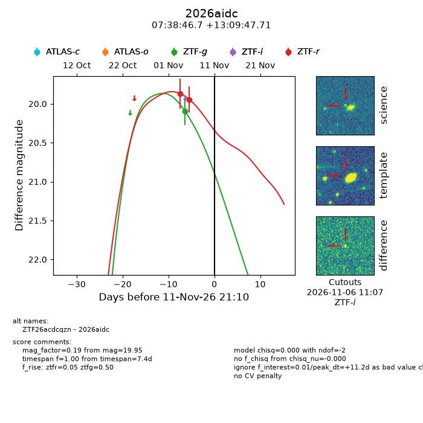
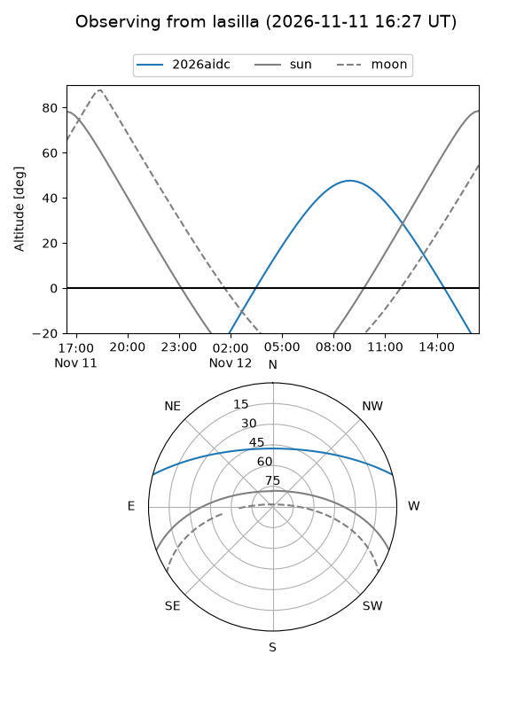
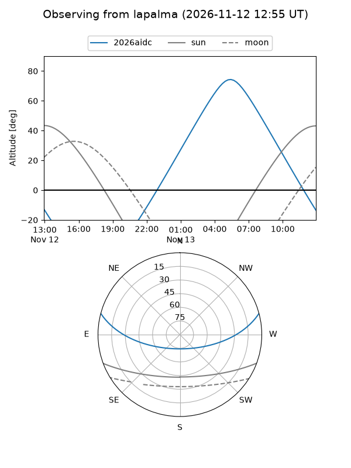
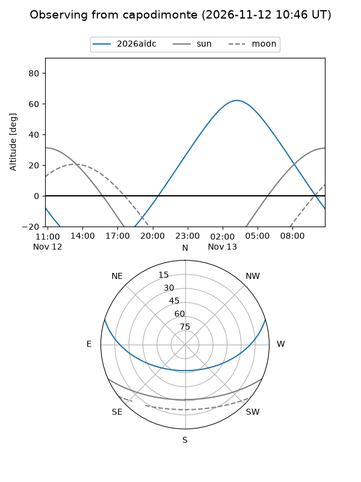
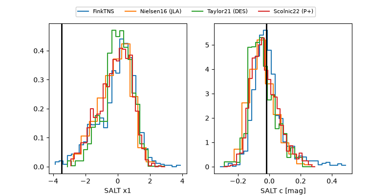

2026aidc
Target 2026aidc at 2026-11-12 09:00
Aliases and brokers:
FINK-ZTF: ztf.fink-portal.org/ZTF26acdcqzn
Lasair-ZTF: lasair-ztf.lsst.ac.uk/objects/ZTF26acdcqzn
ALeRCE-ZTF: alerce.online/object/ZTF26acdcqzn
YSE-PZ: ziggy.ucolick.org/yse/transient_detail/2026aidc
TNS name: wis-tns.org/object/2026aidc
Direct TNS query: direct search
alt names
ZTF26acdcqzn (ztf,fink_ztf)
2026aidc (tns,yse)
Coordinates:
equatorial (ra, dec) = 114.6946,+13.16325
equatorial (HMS+DMS) = 07:38:46.70,+13:09:47.71
galactic (l, b) = (206.2523,+16.35429)
Flags:
peak dt: +11.7
Photometry:
last ztfg=20.09, ztfr=19.95
1 ztfg, 2 ztfr detections
Lightcurve

Visibility



Additional plots
